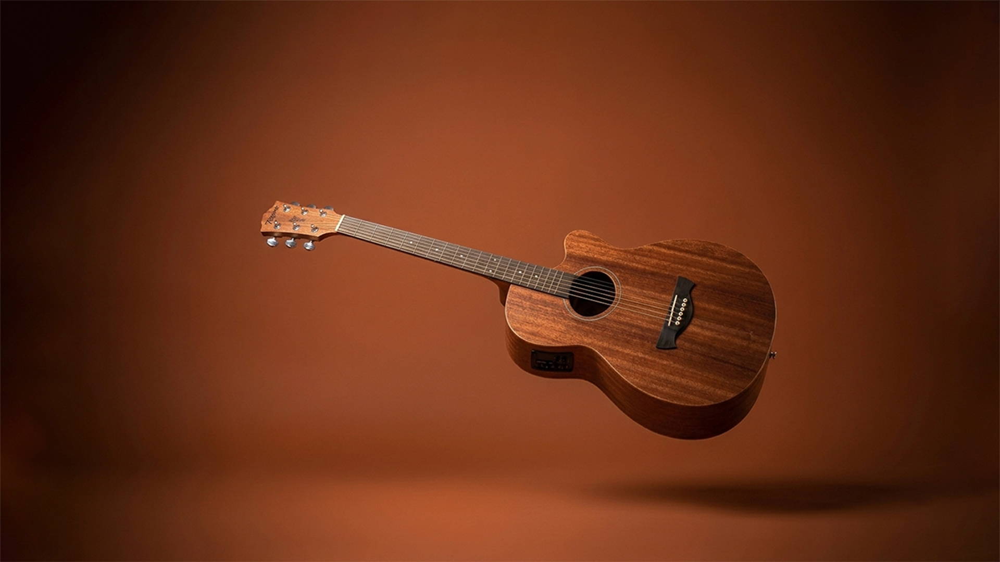
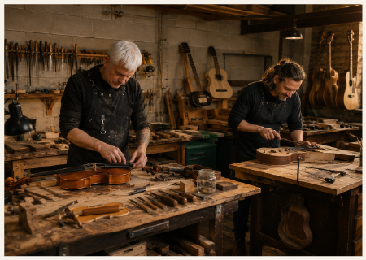
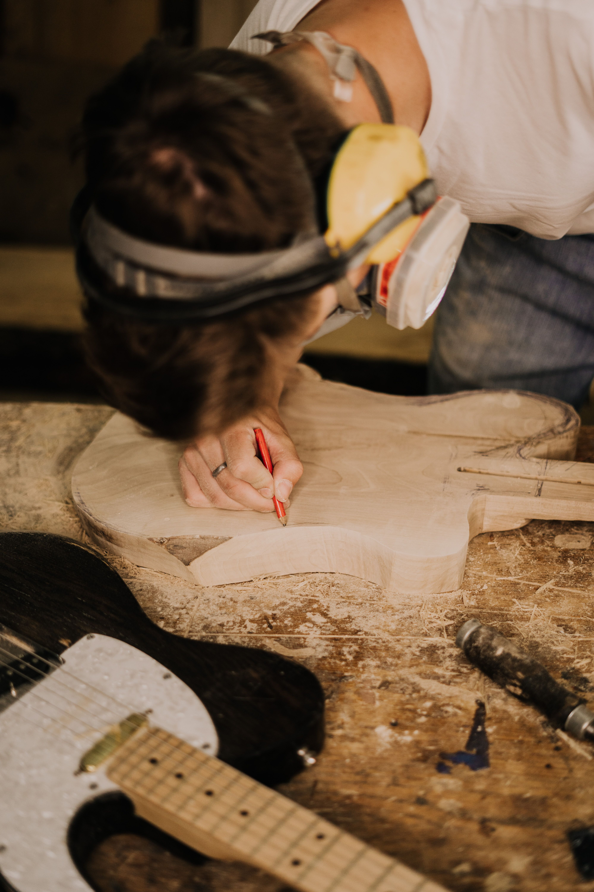
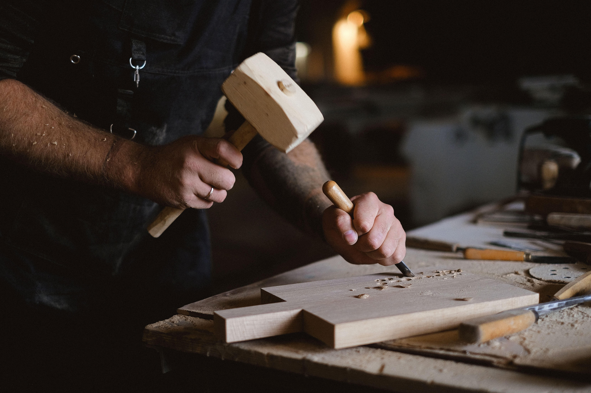
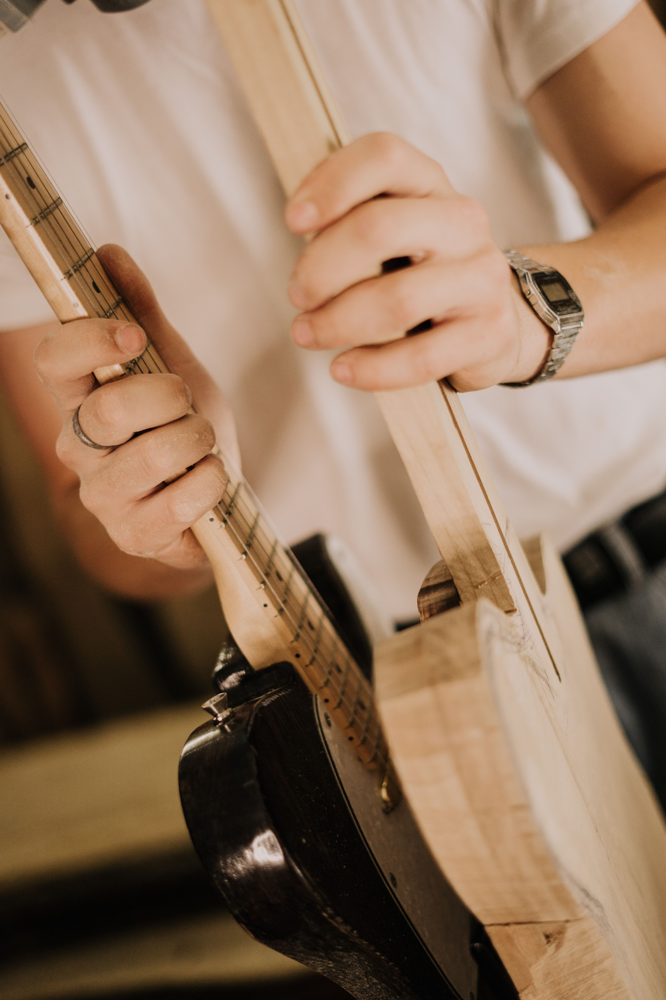
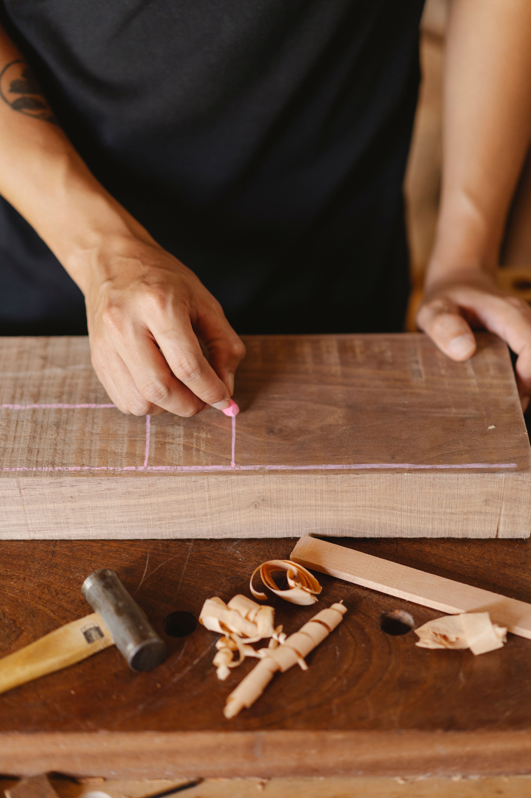
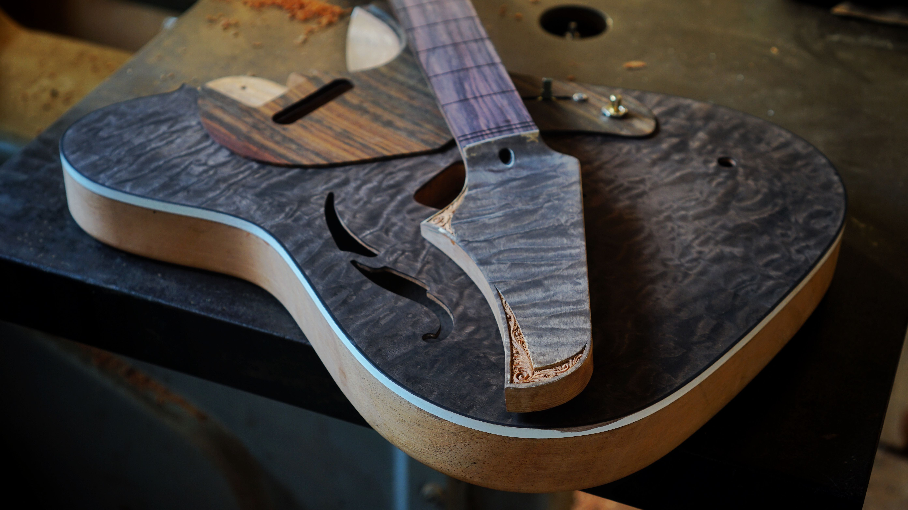
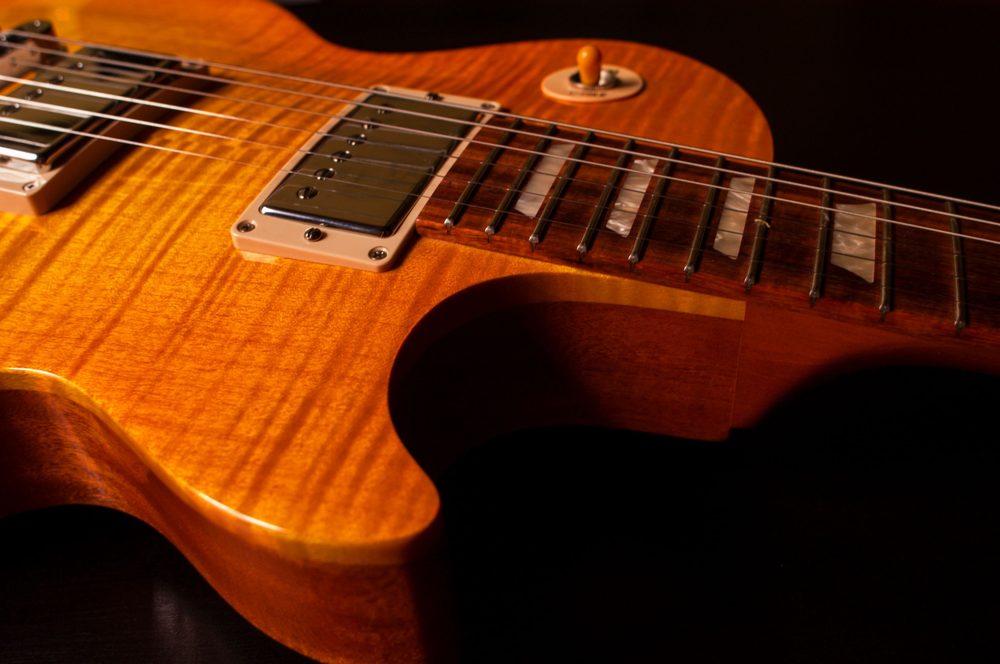
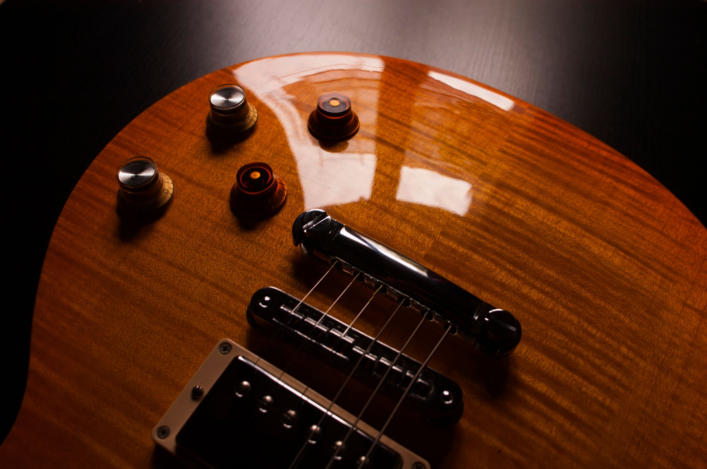

Construcción a medida
Diseño y fabricación artesanal de instrumentos personalizados.

Creamos instrumentos únicos y formamos a quienes desean comprender el verdadero arte de construirlos. Cada guitarra nace del equilibrio entre conocimiento técnico, sensibilidad artesanal y una cuidada selección de materiales nobles.

La luthería combina tradición, precisión y respeto por los materiales. Creemos que cada madera posee una voz propia y que cada instrumento debe reflejar la identidad de quien lo interpreta.
Trabajamos respetando los tiempos naturales de cada proceso para lograr instrumentos con carácter, equilibrio y una calidad que perdure en el tiempo.
Diseño y fabricación artesanal de instrumentos personalizados.
Recuperación de instrumentos respetando su identidad histórica y sonora.
Correcciones estructurales y mantenimiento especializado.
Calibración, entonación y optimización del instrumento.
Nuestros programas están orientados a aficionados, músicos y futuros luthiers que buscan comprender el oficio mediante una experiencia práctica y personalizada.

Construí una guitarra completamente personalizada mientras aprendés cada etapa del proceso de construcción.

Ideal para quienes desean comenzar en la luthería.

Fabricación integral de una guitarra artesanal.

Comprendé cómo cada madera influye en el sonido.

Acabados y detalles propios de instrumentos de alta gama.
Una biblioteca interactiva donde podrás descubrir las características, historia y proceso constructivo de distintos instrumentos.


Explorá una biblioteca interactiva con las especies más utilizadas en luthería y descubrí cómo influyen en el carácter sonoro y estético de cada instrumento.


Una selección de imágenes que muestran el proceso artesanal y el resultado final de cada proyecto.








Ya sea que desees construir tu primer instrumento, restaurar una guitarra o formar parte de nuestros cursos, estaremos encantados de acompañarte.